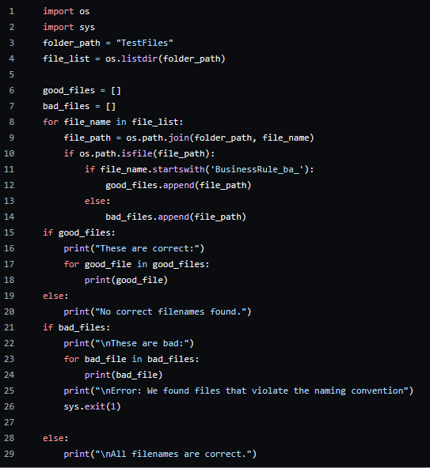

Project 3 - File name convention checker
In project 3, I wrote a Python script that reads all the filenames and checks if the name is correct or not. The name is correct when it has a specific word in front of it. Then it makes a list of the correct and the incorrect files and gives an error so you know which file names to fix.
| The code to check the filenames | The result, sorted filenames |
|---|---|
|  |  |
The code to check the filename:
import os
import sys
folder_path = "projects/project1/TestFiles"
file_list = os.listdir(folder_path)
good_files = []
bad_files = []
for file_name in file_list:
file_path = os.path.join(folder_path, file_name)
if os.path.isfile(file_path):
if file_name.startswith('BusinessRule_ba_'):
good_files.append(file_path)
else:
bad_files.append(file_path)
if good_files:
print("These are correct:")
for good_file in good_files:
print(good_file)
else:
print("No correct filenames found.")
if bad_files:
print("\nThese are bad:")
for bad_file in bad_files:
print(bad_file)
print("\nError: We found files that violate the naming convention")
sys.exit(1)
else:
print("\nAll filenames are correct.")